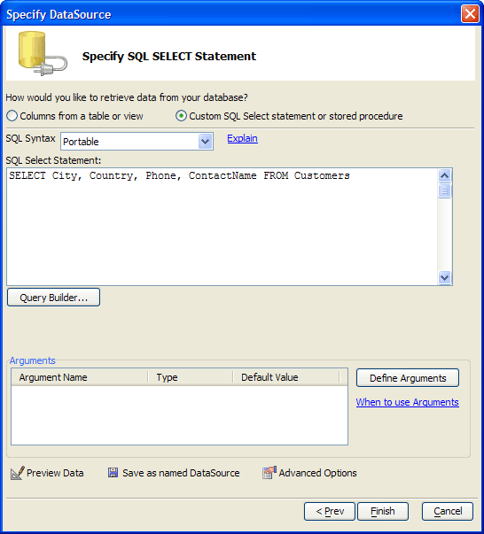

Custom SQL Select Statement or Stored Procedure
The first step is to define the type of SQL that you want to use. There are 3 options:
"Portable" - This Portable SQL, a generic and database independent version of SQL. Statements created with Portable SQL can be run against any SQL database. This option allows you to use the SQL Genie.
"Native" - This is the specific SQL dialect of your database. You may be able to do things with a native SQL dialect that is not normally supported by other SQL databases. This option is incompatible with the SQL Genie.
"Stored procedure" - This calls a stored SQL procedure on your database.

If you selected "Native" or "Stored procedure" in step 1,
Enter a SQL statement into the SQL Select Statement text area.
Click Finish.
If you selected "Portable" in step 1:
If you would like to use an argument in a WHERE or ORDER BY clause of the SELECT statement, click Define to display the <span class=Screen>Define/Edit Arguments</span> dialog box.
Click Query Builder... to display the <span class=Screen>SQL Genie</span>.
Optionally, click Preview Data to see the data that the SELECT statement will retrieve.
Optionally, click Advanced Options to define how the imported data will be mapped into fields in an Alpha Anywhere table. This dialog allows you to change data types and field lengths.
If you would like to save the data source definition that you have created as a Named DataSource, when you finish using the SQL Genie,
In the Specify DataSource dialog click Save as Named DataSource.
Enter a name in the Save DataSource dialog and click OK.
 Note : At any time
you can switch to defining the SQL directly by clicking the Custom
SQL Select statement or stored procedure radio button.
Note : At any time
you can switch to defining the SQL directly by clicking the Custom
SQL Select statement or stored procedure radio button.
See Also